감각적인 AI 비주얼 기획부터,
데이터 효율 검증까지.
설득의 구조를 만들어나가는 콘텐츠 설계자,
저는 이한수입니다.
시대의 도구를 관통하는
변치 않는 본질.
안녕하세요, 보기 좋은 영상을 만드는 데서 멈추지 않고 '누구를, 어떻게 움직여 팔 것인가'를 끝까지 고민하는 기획자 이한수입니다.
주판을 배우던 어린 시절 손끝의 수 감각에서 출발해 286 컴퓨터, 군 행정병 시절의 치밀한 문서 업무를 거쳐 인공지능·빅데이터 전공 학사에 이르기까지, 도구가 바뀔 때마다 새로운 방식을 익히며 적응해 왔습니다. 기술의 파도가 몇 번을 바뀌는 동안 변하지 않은 것은 배움을 멈추지 않는 태도였습니다.
그 태도는 실무 기획에도 이어집니다. 오픈마켓의 구조적 흐름과 마켓 판매 데이터를 분석하며 소비자 구매 퍼널의 끝단까지 파악하고, 장신간 경험으로 얻은 실물 비즈니스의 현장 감각으로 '팔리는 영상'의 기준을 세웁니다. 동시에 고전을 계속 탐독하고 최신 영화의 서사 구조를 꾸준히 탐구하여, 기술이 아무리 발전해도 사람의 마음을 움직이는 것은 결국 '본질적인 스토리텔링'이라는 믿음을 기획에 담아냅니다.
필요한 디지털 에셋은 직접 만들고 GAS 자동화하거나 깃허브로 셀프호스팅하는 실행력, 프로젝트 전체를 1인 전담으로 완수해 온 책임감으로 크리에이티브 스펙트럼을 넓혀나가고 있습니다.
구매 전환을 설득하는 신제품 AI 상세페이지 & 모션
신제품 런칭 상세페이지 기획 및 AI 제품 시연 영상 제작
- S. 기존 정적 이미지 위주의 상세페이지에서 잦은 스크롤 이탈 및 체류시간 저하 발생.
- T. 고객 페인포인트부터 구매 결심까지 이어지는 설득 퍼널 재구축 및 전환율(CVR) 방어.
- A. 후킹-솔루션-신뢰 3단계 레이아웃 설계 후, 핵심 소구 구간마다 시선을 붙잡는 AI 제품 시연 영상을 인라인 배치.
- R. 정적 이미지 대비 체류시간 및 몰입도 극대화, 동적 쇼핑 경험을 통한 인게이지먼트 강화.
트렌드와 제작 효율을 극대화하는 AI 영상 기획
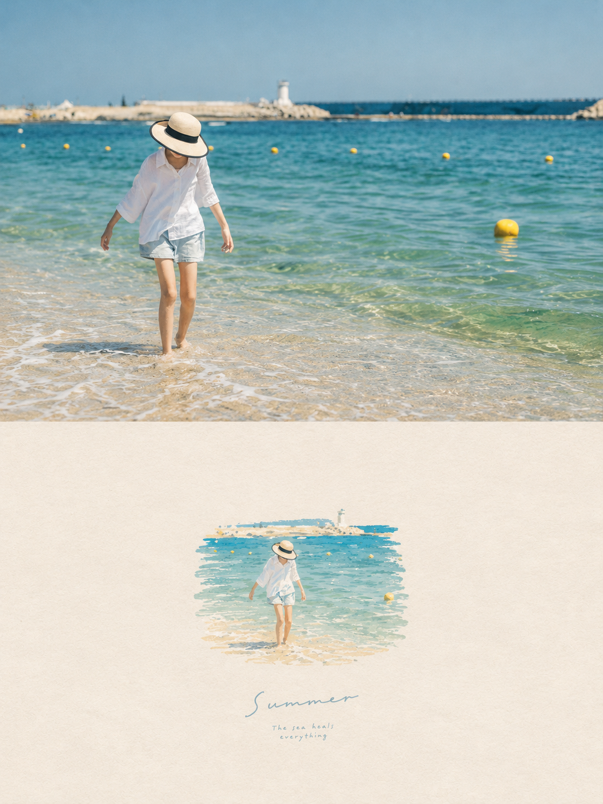
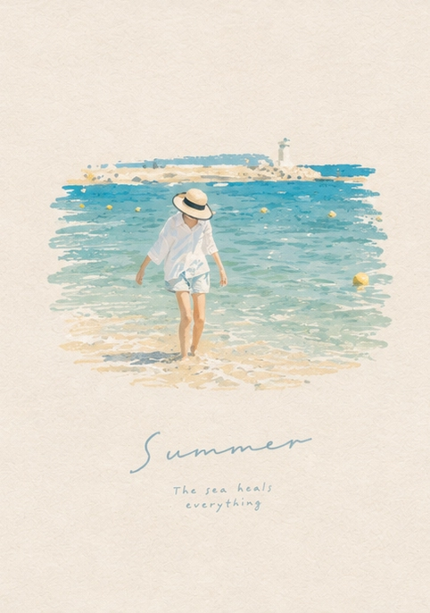
스틸 이미지의 일러스트 변환 및 AI 영상화
- S. 유행하는 이미지 전환, 생성 프롬프트 테스트.
- T. 카피 넘어 발전시켜 자신만의 프롬프트로 개선 스킬화.
- A. 실사 사진의 오리지널리티(구도/톤앤매너)를 유지한 채 AI로 일러스트 변환 후 모션 부여 파이프라인 구축.
제품 인스타그램 AI 홍보 영상
- S. 후킹 숏폼 광고 필요
- A. 초반 3초 시각적 훅(Hook)을 강조한 타깃 맞춤형 AI 영상 제작
광고주의 비즈니스와 숫자를 이해하는 퍼포먼스 AE
지마켓 광고 효율 확인용 BI 대시보드 구축
- S. 캠페인 집행 후 파편화된 지표로 신속한 광고 성과 파악 및 예산 재배분 지연.
- A. 흩어진 지표(노출, 클릭, 전환, ROAS)를 통합 모니터링하는 대시보드 직접 연동 및 구축.
- R. 저효율 소재의 빠른 OFF 판단으로 매체 예산 최적화 및 리포팅 공수 단축.
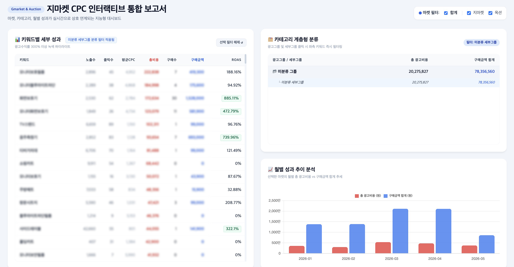
컨테이너 수입용 실시간 재고 및 발주 예측 시스템
- S. 수입 리드타임 문제로 품절(기회손실) 및 과잉 악성 재고 리스크 상존.
- A. 리드타임과 일별 판매 속도를 역산하여 실시간 재고 및 발주 시점을 자동 예측시스템 구축.
- R. 공급 주기에 동기화된 판매와 물류 관리 안정화.
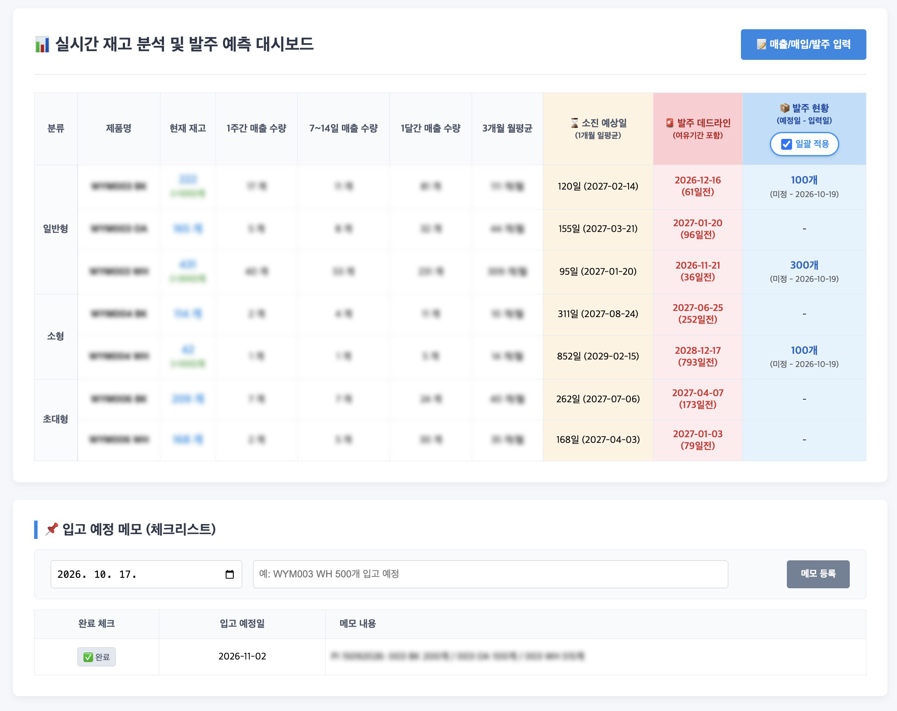
직접 구축하고 GAS로 기능을 자동화한 6가지 웹 프로덕트
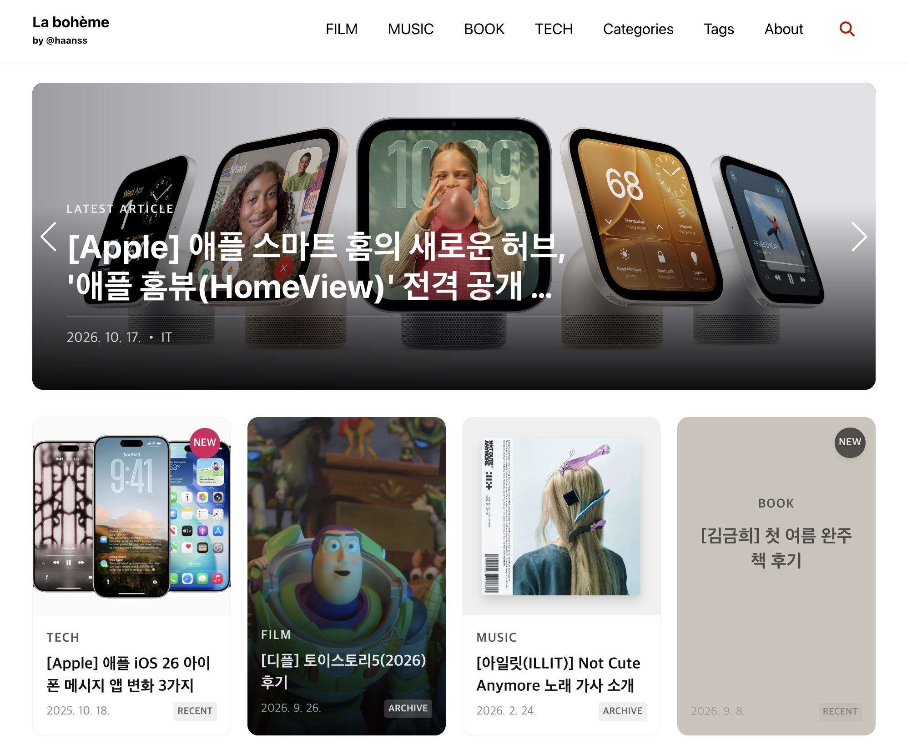
GitHub Jekyll 블로그
기존에 사용하던 티스토리 블로그를 깃허브 기반의 지킬 블로그로 마이그레이션
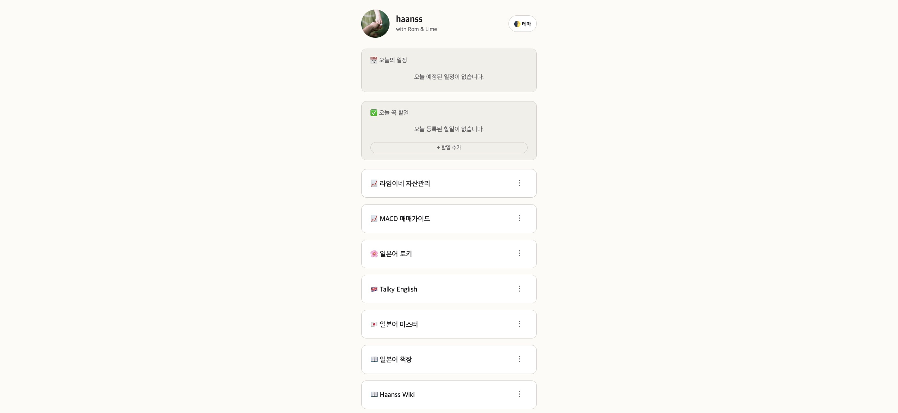
링크트리 형식 개인 링크 서비스
GAS(Google Apps Script) 기반의 개인 서비스가 많아짐에 따라 한곳에서 관리할 수 있도록 링크트리 형식의 마이크로 랜딩 허브 링크 서비스 자체 제작
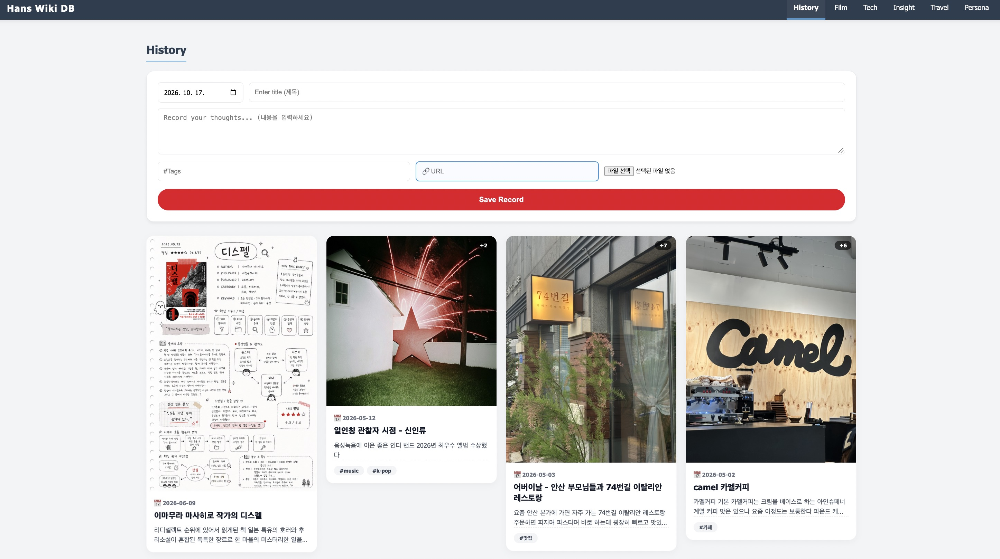
인스타그램 + 핀터레스트형 원페이지
기존 인스타그램을 일기처럼 사용하기 위해 만든 개인 SNS 서비스
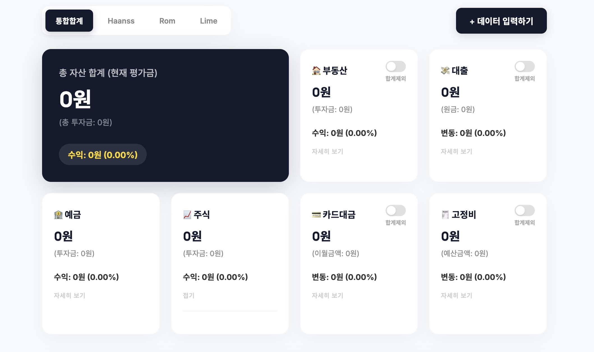
자산관리 대시보드
전 가족의 복잡한 자산 흐름을 한눈에 파악하고, 스위치로 각 가족의 데이터를 직관적인 UI로 시각화한 데이터 대시보드
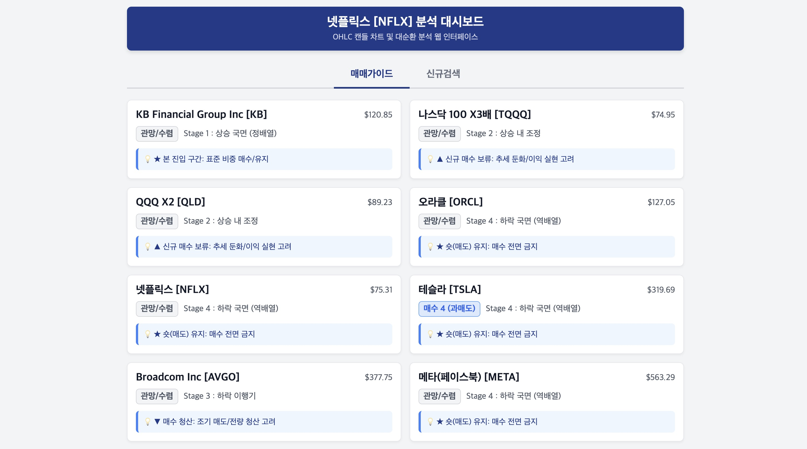
MACD 매매가이드 서비스
보조지표 시그널과 매매 원칙을 알기 쉽게 구조화한 인터랙티브 가이드
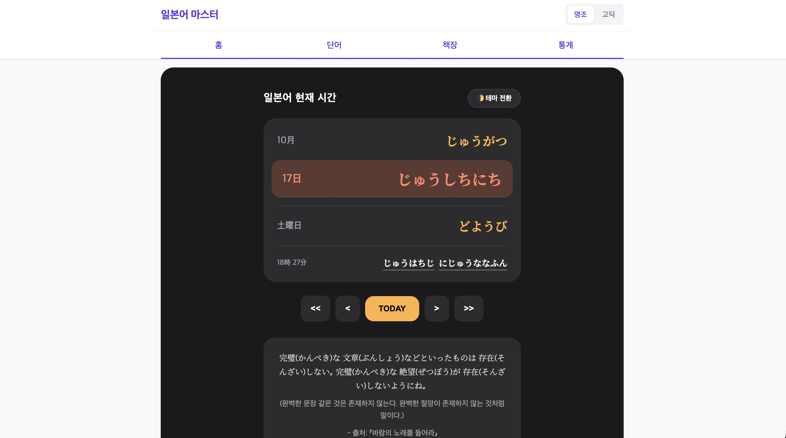
외국어 공부 웹 서비스
학습 로직을 GAS로 연동하여 직접 설계하고 구현한 어학 앱
빛과 구도의 기본기를 아는 비주얼 디렉팅 (Nikon D700 & FM3a 필름카메라)
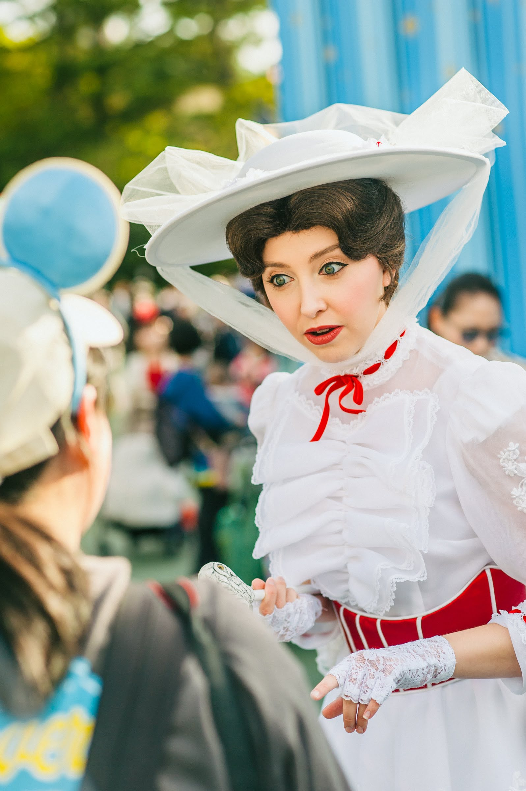
Nikon D700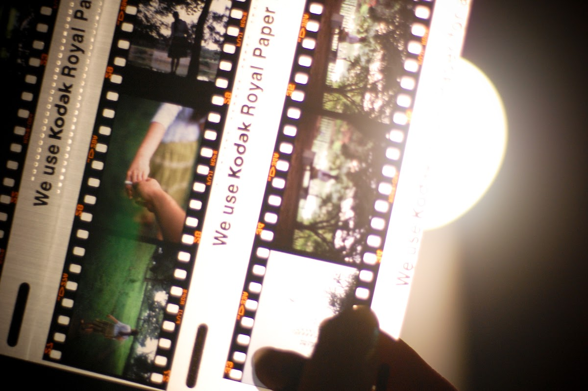
Nikon FM3a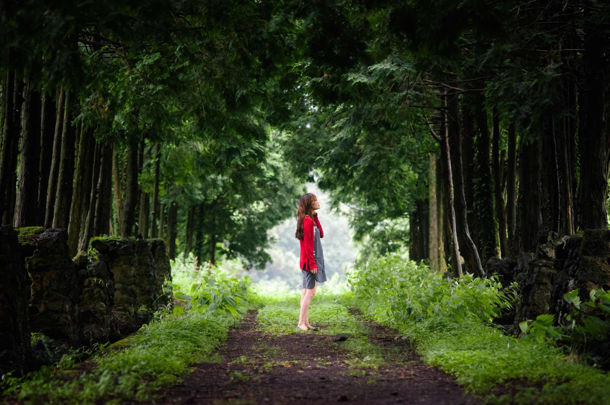
Nikon D700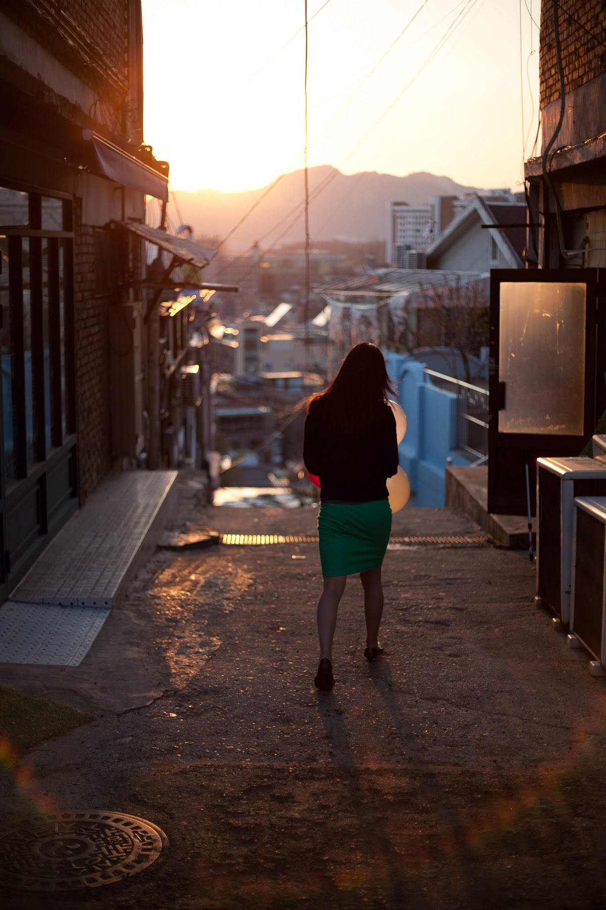
Nikon D700